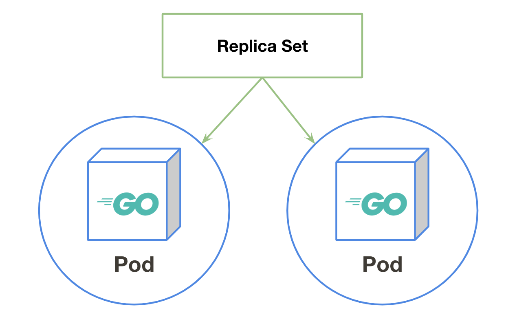

ReplicaSet

ReplicaSetとは¶
Podの維持を行います。
Podを指定した台数になるようにコンテナの作成を行い、Podが落ちたときに自動復旧を行って指定された環境を維持し続けます。
動かしてみる¶
nginxイメージを2台動かしてみましょう
ReplicaSetは重要なObjectsの1つなのですが、CLIで作成できないためManifestで実行します。
$ cat <<EOL | kubectl apply -f - apiVersion: apps/v1 kind: ReplicaSet metadata: name: mynginx labels: app: mynginx spec: replicas: 2 # 起動したい台数を指定する selector: matchLabels: app: mynginx template: metadata: labels: app: mynginx spec: containers: - name: nginx image: nginx EOL
ReplicaSetが作成されたかみてみましょう。
kubectl get に replicaset を指定することで現在起動しているReplicaSetを閲覧することができます。
$ kubectl get replicaset NAME DESIRED CURRENT READY AGE mynginx 2 2 2 17s
podが2台起動されているか確認してみましょう。
$ kubectl get pods NAME READY STATUS RESTARTS AGE mynginx-4r56x 1/1 Running 0 107s mynginx-p9tsk 1/1 Running 0 107s
ReplicaSetの維持¶
ReplicaSetはPodの維持を行います。
実際にPodを削除したときに自動復旧してくれるのか、台数（レプリカ数）を増やしたときに追従してくれるのか、実際に試してみましょう。
自動復旧¶
まずは自動復旧を試してみます。
ReplicaSetで起動した2台のPodを確認します。
$ kubectl get pods NAME READY STATUS RESTARTS AGE mynginx-4r56x 1/1 Running 0 4m46s mynginx-p9tsk 1/1 Running 0 4m46s
kubectl delete コマンドでどちらかのPodを指定して削除します。
$ kubectl delete pod mynginx-4r56x pod "mynginx-4r56x" deleted
もう一度podの台数を確認してみましょう。
2台Podが存在してAGE(生存時間)が新しいことが確認でき、自動的に2台コンテナが立ち上がったことがわかります。
$ kubectl get pods NAME READY STATUS RESTARTS AGE mynginx-6rg8r 1/1 Running 0 14s mynginx-p9tsk 1/1 Running 0 5m11s
スケールアウト¶
Podを2台から3台にスケールアウトしてみましょう。
2台Podが存在することを確認します。
$ kubectl get pods NAME READY STATUS RESTARTS AGE mynginx-6rg8r 1/1 Running 0 82m mynginx-p9tsk 1/1 Running 0 87m
確認ができたら実際にスケールアウトしてみましょう。
kubectl scale コマンドでReplicaSetと希望する台数を宣言します。
$ kubectl scale --replicas=3 replicaset/mynginx replicaset.extensions/mynginx scaled
3台になったことを確認できれば成功です。
$ kubectl get pods NAME READY STATUS RESTARTS AGE mynginx-6rg8r 1/1 Running 0 82m mynginx-p9tsk 1/1 Running 0 87m mynginx-qs9js 1/1 Running 0 4s
片付け¶
$ kubectl delete replicaset mynginx